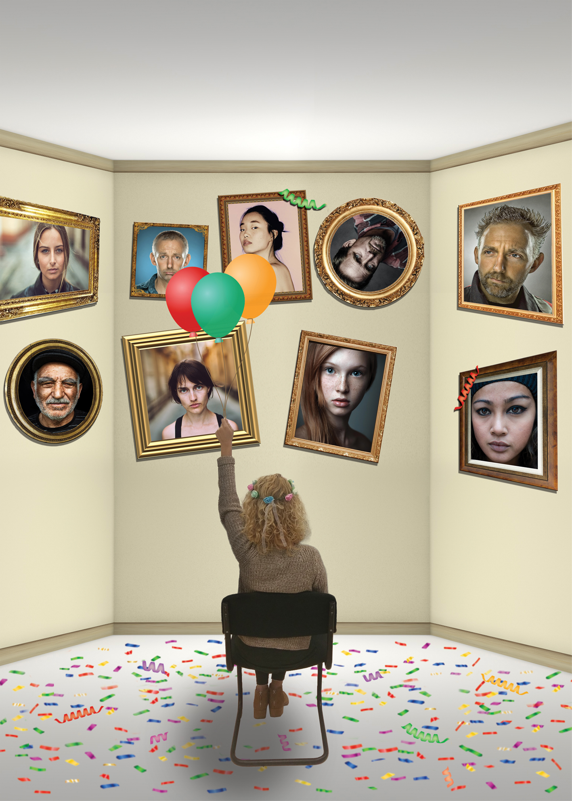

שם התוצר: נווה מדבר
בציור המקורי נמצא עץ השיטה בצבעים עזים באמצע המדבר. היוצרת חוותה קשיים רבים בחייה שאותם היא מבטאת בציור. היא מדגישה בציור שלה את תחושת הבדידות, העצב והשכול. היא החליטה לצמוח מהמקום של הכאב לחיים חדשים. כשיצרנו את הגרסה שלנו, בחרנו להעביר את אותו הרגש- בדידות וחוסר יציבות, עם קשר לעולם שלנו, עולם שבו אתה יכול להיות מוקף באנשים, ועדיין להרגיש לבד. בחרנו בחגיגת יום הולדת, יום שבו אתה מוקף באנשים שאוהבים אותך, יום שמסמל התחלות חדשות. החלטנו להציב תמונות תלויות בצורה עקומה על הקיר כדי ליצור תחושה של חוסר יציבות פיזית ונפשית. הקונפטי והבלונים מדגישים את הבדידות של הדמות, והבלון שעולה למעלה, מסמל צמיחה, תקווה והתחלה חדשה.